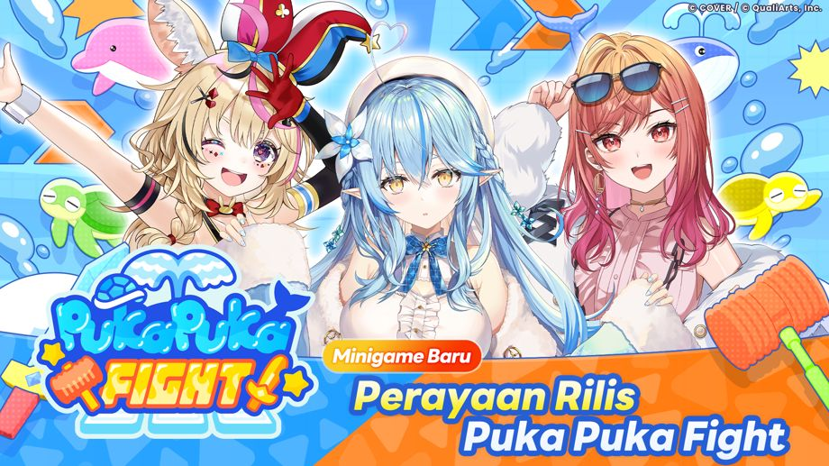
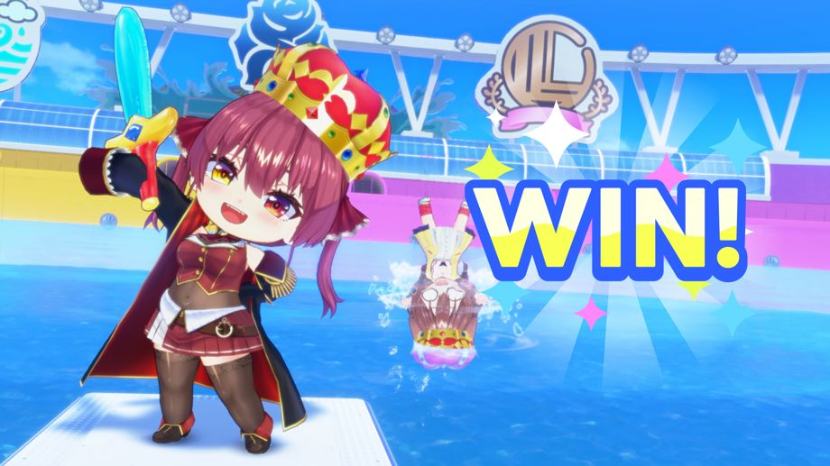

2026-11-25 11:00:00 Mini-game Baru "Puka Puka Fight" Hadir!
◆Tanggal Penambahan Mini-game
2026-11-25 11:00:00~
◆Persyaratan Partisipasi
Selesaikan Misi Area "Mengapung dan let's fight!"
*Misi Area "Mengapung dan let's fight!" akan terbuka setelah menyelesaikan Misi Utama Chapter 3 "Soda Pop Lagoon".
*Jika ingin bermain secara Multiplayer di Private Room, selesaikan Misi Utama Chapter 1, Episode 4 "Legenda Yang Terhubung"
Ringkasan Mini-game Baru "Puka Puka Fight"

Puka Puka Fight adalah Mini-game menggerakkan para holomem dan menjatuhkan Leader Lawan ke dalam air untuk meraih kemenangan.
Dengan menjatuhkan selain holomem Leader Lawan ke dalam air yang dapat direkrut dan manfaatkan sebagai timmu.
Dalam Solo Play pemain bisa bertanding melawan NPC, sedangkan dalam Multiplayer pemain bisa bertanding melawan pemain lain.
Syarat Kemenangan

◆Jatuhkan Leader Lawan ke dalam air
Raih kemenangan dengan menjatuhkan Leader Lawan (holomem bermahkota) ke air.
◆TRY
Kemenangan bisa diraih lewat "TRY" dengan menggerakkan Leader-mu hingga ke platform paling kanan.
Jika Leader tidak dijatuhkan ke air pada giliran berikutnya, maka pemain akan meraih kemenangan.
Tentang Penyusunan Tim

Arah pergerakan setiap holomem berbeda-beda tergantung pada topi yang dikenakan.
holomem dapat disusun ke dalam 4 peran: Leader, Lumba-Lumba, Paus, dan Penyu (Hijau).
◆Cara Bergerak holomem
- Leader: Bisa bergerak 1 petak ke segala arah.
- Lumba-Lumba: Bisa bergerak 1 petak ke 4 arah (atas, bawah, kiri, dan kanan).
- Paus: Bisa bergerak 1 petak ke 4 arah diagonal.
- Penyu (Hijau): Bisa bergerak 1 petak ke depan.
- Penyu (Emas): Bisa bergerak 1 petak ke 6 arah, kecuali diagonal belakang.
Tentang Kendali Selama Giliran

Pemain dan Lawan akan bertanding dengan menggerakkan holomem secara bergantian.
- Gerakkan holomem: Pilih holomem milikmu dan pilih platform yang bisa dituju.
- Tempatkan teman: Pilih holomem yang telah dijadikan teman, lalu tempatkan di platform yang kosong.
*Jika bergerak ke platform yang ditempati holomem Lawan, pemain bisa menjatuhkan holomem tersebut ke dalam air.
Tentang Power-Up Penyu

Penyu (Hijau) akan power-up menjadi Penyu (Emas) jika mencapai platform di kolom paling kanan.
Penyu (Emas) dapat bergerak 1 petak ke 6 arah, kecuali diagonal belakang.
*Jika Penyu (Hijau) yang dijadikan teman ditempatkan secara langsung di platform kolom paling kanan, tidak akan mendapatkan power-up.
*Penyu (Emas) yang jatuh ke dalam air, akan kembali menjadi Penyu (Hijau).
Solo Play

Solo Play dapat dimainkan dalam 2 mode: NORMAL dan CHALLENGE.
◆NORMAL
Mode tantangan dengan total 30 Stage.
Kalahkan holomem di setiap stage untuk membuka stage berikutnya.
◆CHALLENGE
Mode ini akan terbuka setelah menyelesaikan semua stage NORMAL.
Posisi holomem berubah-ubah, sehingga pemain dapat menikmati pertarungan dengan berbagai tingkat kesulitan.
Tentang "Batalkan Langkah"

"Batalkan Langkah" dapat digunakan di Solo Play.
Dengan menekan tombol "Batalkan Langkah", pemain akan kembali ke satu langkah sebelumnya.
*Tidak dapat digunakan di Multiplayer.
Mengenai Hadiah

Hadiah yang didapatkan adalah Soda Pop Koin dan umpan pancing baru.
◆Hadiah untuk mode NORMAL
Di mode NORMAL, dapatkan hadiah penyelesaian saat menyelesaikan setiap stage untuk pertama kalinya.
*Tidak ada hadiah saat memainkan ulang.
◆Hadiah untuk mode CHALLENGE dan Multiplayer
Di mode CHALLENGE dan Multiplayer, hadiah akan didapat terlepas dari menang atau kalah.
*Tidak ada hadiah saat bermain di Private Room Multiplayer.
◆Tentang Mini-game Boost
Di mode NORMAL dan CHALLENGE, jumlah penggunaan Minigame Boost sudah ditetapkan.
Di Multiplayer, jumlah penggunaan Minigame Boost dapat dipilih.
Di Multiplayer, hadiah yang bisa didapat akan meningkat sesuai dengan jumlah penggunaan Minigame Boost.
Catatan Penting
- Konten dan periode event bisa berubah sewaktu-waktu tanpa pemberitahuan terlebih dahulu.
- Hadiah mode NORMAL tidak berlaku untuk peningkatan jumlah hadiah dari HoloPaspor maupun Board Holomem.